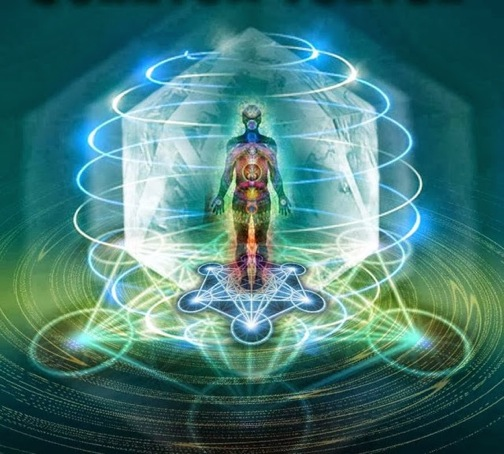

Los Registros Akáshicos son una memoria universal de la existencia, similar a un Internet Cósmico, representan un espacio multidimensional dónde se archivan todas las experiencias del alma incluyendo todos los conocimientos y las experiencias de las vidas pasadas, la vida presente y las potencialidades futuras.

Brian Weiss en su libro "Muchas vidas, muchos maestros" relata una asombrosa experiencia que cambió por completo su propia vida y su visión de la psicoterapia. Una de sus pacientes, Catherine, recordó bajo hipnosis varias de sus vidas y pudo encontrar en ellas el origen de muchos de los traumas que sufría. Catherine se curó, pero además logró ponerse en contacto con los Maestros, espíritus superiores que habitan los estados entre dos vidas, de los que recibió mensajes de sabiduría.